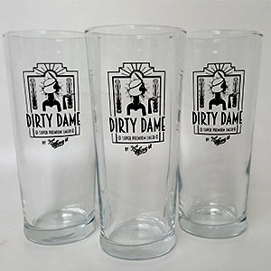
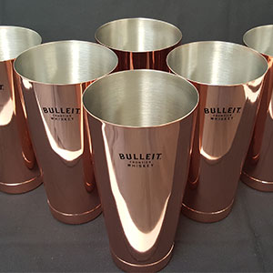
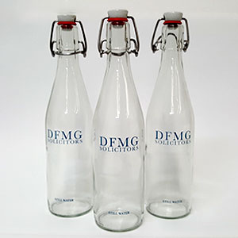
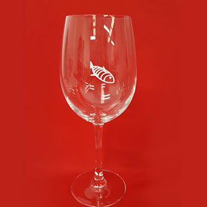
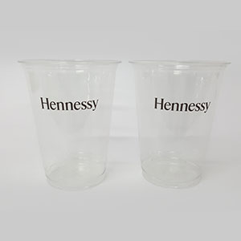
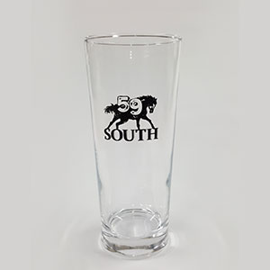
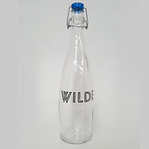
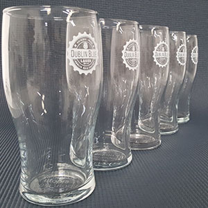
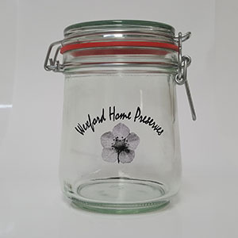
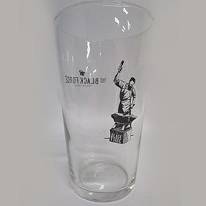
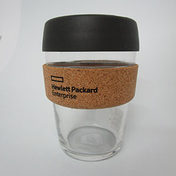
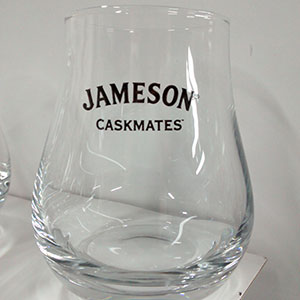
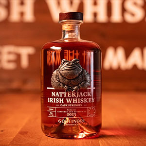
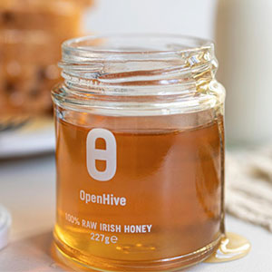
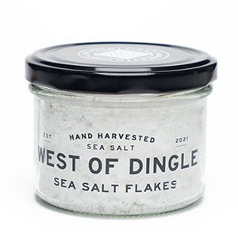
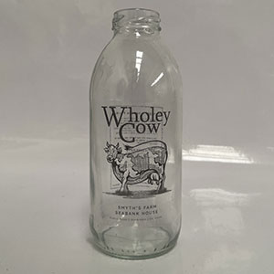
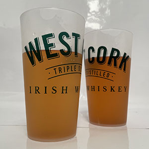
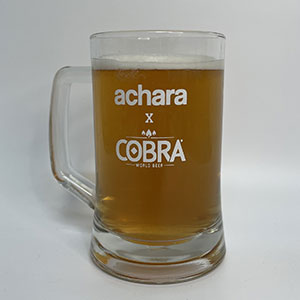
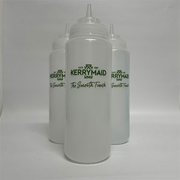
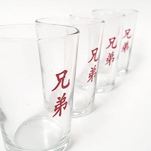
GlassPrinting.ie have printed thousands of glass bottles and drinking glasses including plastic bottles since offering this service over 10 years ago.
Our team is qualified and happy to provide any design solutions you might need. Just give us a brief and we will send you the artwork.
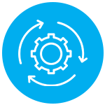
Screen printing is a process that applies ink directly to the glass, hence the name GlassPrinting.ie. Silkscreen printed bottles arrive at your bottling facility line ready to be filled/capped, eliminating the cost and time required to operate a labelling machine or hand-applied labels.
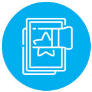
Our manufacturing facilities are conveniently located in Tallaght, South Dublin which is close to major road networks such as the N7 (Naas Road/Motorway) and M50 Dublin.
We will be happy to help you choose and then source the right product for your project from the standard glassware items to the most unique and niche ones.
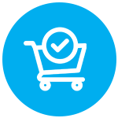
Our Minimum Order Quantity (MOQ) is the smallest number of items we can sell in a single order.For all products, this is set at 48 units.
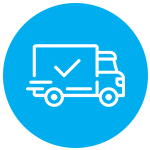
We use a number of reputable courier and delivery services and can supply tracking numbers respectively. Full coverage nationwide.
"We have worked with Hall Print for over 3 years and found them to be a first class supplier – they are flexible, accommodating and supportive of our business as well as delivering us beautifully printed Seabody jars." - Seabody Cosmetics
"We at Graze Dairy find the standard of printing is excellent from GlassPrinting.ie. They follow this up with great customer care and quick turnaround times on stock. We look forward to working with them into the future." - Graze Dairy
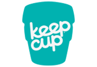
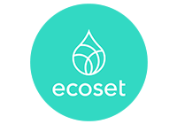
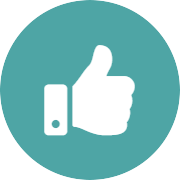
We pride ourselves on delivering great quality and great service.
Our work goes through a rigorous production process ensuring the highest standards possible.
Our team has a combined experience of over 50 years with the experience know-how to get the job done.
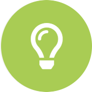
If there is a certain way to print it, we can achieve it.
Got a question? We're here to answer! If you don't see your question here, drop us a line on our Contact Page.
We offer personalised printing on a wide range of glassware, including wine glasses, beer glasses, pint glasses, water bottles, milk bottles, cosmetic jars, carafes, conference room bottles, and other tableware. Whether you're looking for branded barware or engraved custom glassware for an event, we’ve got you covered.
Yes, printing on glass is an excellent eco-friendly solution. By applying ink directly to glassware without using labels, we reduce waste. Additionally, our inks are organic and contain no heavy metals. We also use UV light to cure our non-solvent inks, eliminating the need for high-temperature ovens, which significantly reduces the carbon footprint compared to traditional methods.
We offer low minimum order quantities (MOQs) for all our printed glassware products. This allows you to order as few or as many personalised wine glasses, beer glasses, milk bottles, or cosmetic jars as needed—ideal for both small events and large promotions. We recommend a standard MOQ of approximately 250 glasses, as this is when it becomes more economical. We can accommodate smaller quantities, but the unit cost will be higher.
We use advanced direct-to-glass printing techniques to create durable, long-lasting designs. Our methods ensure that your bespoke branded glassware, including milk bottles and cosmetic jars, maintains a professional and premium appearance.
Yes, you can! We are happy to accept glassware or stock that you supply for us to print on. Whether it’s wine glasses, beer glasses, milk bottles, cosmetic jars, or other glassware, we will work with your provided items to ensure your design or logo is printed with the same high-quality finish we offer on our own stock.
Absolutely! We can co-brand beer glasses with pub names or event-specific branding. Our specialised in-house process allows us to print on existing printed glassware without damaging the original design, so go ahead—grab your glasses and let’s get branding for your occasion or pub with printed glasses.
For smaller quantity orders, it’s often more cost-effective to print in a single colour. However, for certain designs and bottles, multi-colour printing is available, though it comes at a higher cost. If you’re unsure about the best option for your design, feel free to contact us for advice.
We require artwork to be in outlined vector format with outlined fonts to ensure the best printing results. If you don’t have your artwork in this format, we offer a redrawing service. The cost for redrawing depends on the complexity of the design and the time involved. Contact us for a quote based on your specific design.
We do not offer physical pre-production samples. However, our experienced design team will provide a digital visual proof of your design for you to approve before production begins. This ensures you’re happy with the look of your custom-printed glassware before we start.
Our standard turnaround time for custom printed glassware is typically 10-14 days, depending on stock availability. We can also accommodate rush orders depending on your needs. Larger volume production batches for on-the-shelf bottle products may require longer production times. Please contact us for details.
Absolutely! Our personalised branding and direct-printed glassware are perfect for weddings, corporate events, and promotional giveaways. We can tailor the design to fit the occasion and make your event extra special.
Yes, we provide shipping both within Ireland and internationally. No matter where you are, you can enjoy our high-quality printed glassware, including milk bottles and cosmetic jars, for your business or event.
We can print your logo directly at the 175ml measurement mark on a wine glass, creating a seamless design where your logo interacts with the measure. This is ideal for bars, restaurants, and events where both branding and accuracy are important. Our custom wine glass printing ensures that the measurement and logo are clear, durable, and professional-looking.
Yes, we can print your design in any Pantone colour to ensure brand consistency and accurate colour representation. Whether you need a specific shade for your logo or a unique colour for your event, our custom printed glassware can match your exact Pantone specifications for a flawless finish.
From our years of experience in print, design, and branding of glassware, we’ve found that the best colour is a brilliant pure white. This ensures a clean and crisp finish, and the colour doesn’t affect the perception of the product inside the glass. Printing white onto coloured cosmetic glass products is especially appealing.
Yes, we offer customised nucleation on beer glasses, which can greatly enhance both the branding and the enjoyment of the beer. Nucleation adds small etchings inside the glass that help release the carbonation in the beer, resulting in a more vibrant, visually appealing head and improving the overall drinking experience. Not only does this make the beer look more appetising, but it also adds to the branding experience, as the etching can include a logo or design, making each pour more memorable for your customers.